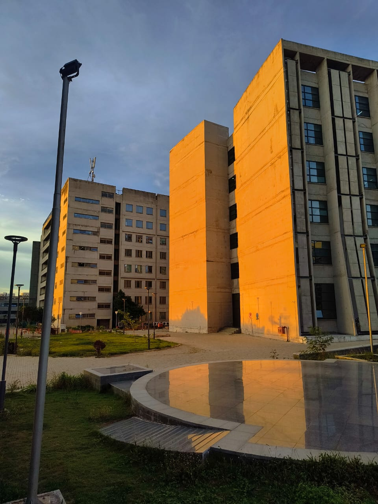

Computational Engineering
Bridging the gap between traditional engineering education and the computational demands of modern industry.
Need for Computational Engineering
Modern engineering challenges are defined by their complexity, scale, and the volume of data they generate. As a result, traditional experimental and analytical approaches, while being foundational, are often no longer sufficient on their own for designing, optimizing, and operating today's advanced systems. Whether it's developing next-generation vehicles, designing resilient infrastructure or innovating in healthcare, engineers now rely on advanced computational tools and techniques to model, simulate, and analyze complex systems. Utilizing sophisticated algorithms, high-performance computing, and data-driven methods has become essential for achieving meaningful progress in these fields.
Computational Engineering addresses this critical need by integrating mathematical modeling, scientific computing, and data-driven methods into the engineering workflow. This enables engineers to:
- Optimize predictive analysis → Simulate real-world behavior of systems under diverse conditions, leading to better-informed decisions and improved reliability. As an add on, rapid prototyping and testing designs virtually, reduces development time and costs.
- Optimize performance → Use advanced algorithms and optimization techniques to refine system performance and resource efficiency.
As industries move towards digital-first strategies, the demand for engineers skilled in computational modeling, simulation, and analytics continues to grow. Computational Engineering is thus central to the future of research, innovation, and industrial competitiveness.
CO at IIT Hyderabad
The Computational Engineering programme at IIT Hyderabad is dedicated to preparing students for this evolving landscape. This undergrad program blends the power of computational analysis, data structures and analytics, applied math, and core engineering disciplines to solve real-world problems. With this, the program emphasizes a strong foundation in mathematical analysis, numerical methods, scientific computing, and high-performance computing integrated with comprehensive exposure to core engineering areas such as mechanics, material sciences, biomed, and biotech.
Program Structure:
- Core Foundations: In-depth training in applied mathematics, numerical analysis, optimization, and programming, supporting modeling, simulation, and analysis of complex systems.
- Engineering Integration: Essential engineering courses are enhanced with computational methods, bridging theory and real-world application.
- Specialized Electives: Advanced elective courses allow students to focus on topics such as computational fluid dynamics, uncertainty quantification, deep learning for engineering, computational materials, and biomedical modeling.
- Project-Driven Learning: Hands-on projects, industry internships, and research experiences, concluding with a comprehensive project which could potentially focus on real engineering issues.
Why CO at IIT Hyderabad
- Interdisciplinary Focus:
The curriculum is designed to overcome traditional disciplinary boundaries, enabling students to address complex, cross-domain problems. - Global Connections:
IIT Hyderabad has strong international collaborations with leading universities and research institutes, providing students with opportunities for global exposure, joint projects, and exchange programs. - Flexibility and Depth:
A balanced mix of core courses and electives allows students to develop both breadth and depth in computational engineering. - Rapid Growth and Legacy of Innovation:
As one of the fastest-growing IITs, IIT Hyderabad is recognized for its dynamic academic environment, cutting-edge research, and state-of-the-art facilities. Built on a foundation of pioneering research and creative problem-solving, this program symbolizes the institute's drive to set new benchmarks and deliver solutions that make a lasting difference in society. - Career and Academic Prospects
- Graduates are prepared for a wide range of opportunities in simulation and digital twin development, data-driven engineering design, and computational analysis across sectors like manufacturing, energy, aerospace, and healthcare.
- Their strong background in computational methods and software tools also opens doors to roles in high-performance computing, data analytics, and AI for engineering systems.
- In addition to immediate industry opportunities, the program offers an excellent foundation for further studies. Graduates are well-suited for advanced degrees and research in computational science, applied math, and interdisciplinary fields, positioning them for impactful careers in both industry and academia.
